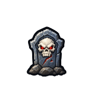

Satellite
Carte du jeu
⚙
Tout afficher
▶ Lecture
1×
2×
4×
8×
16×
Suivre
Recentrer
Maîtres de vol
Cimetières
Auberges
Instances
Ports / zeppelins
Trajets en vol
Trajets de mort
Calibration visuelle
Copier
Réinitialiser
Points enregistrés
Coordonnées
Trajet extérieur
marche
monture
nage
trajet aérien
fantôme

décès du joueur
instance · temps écoulé